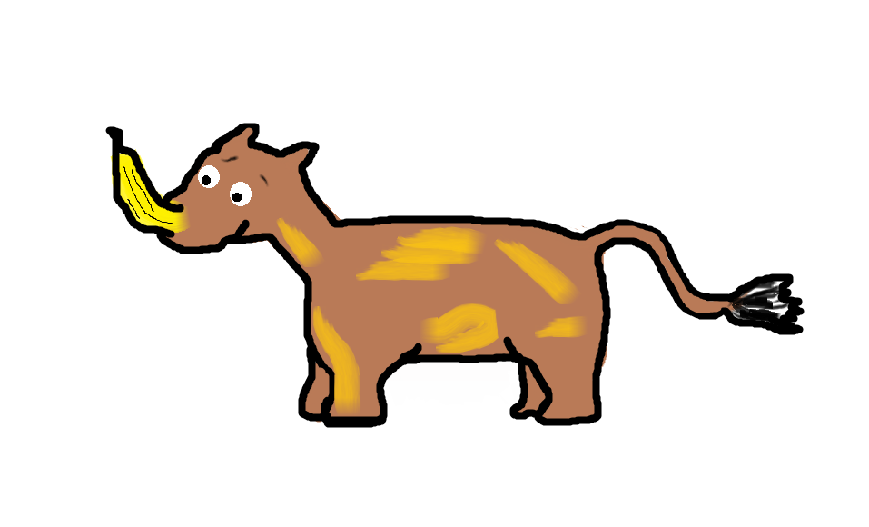

Bananhörning
Bananhörningen (Ariera rhino) är en familj banantåiga hovdjur. Deras utmärkande drag är det stora gula hornet på nosen, som syns på långt håll.

Utseende
Alla nu levande bananhörningar har ett horn på nosen, men man har hittat fossiler av bananhörningar från järnåldern med upp till fem horn. Bananhörningens horn är inte fäst vid kraniet utan enbart vid huden. Hornet blir i snitt 0,5 meter långt och är lite böjt. Kroppen är extremt robust och bärs upp av korta, tjocka ben. Fötterna har fyra banantår och svansen är kort med en vippa. Huden är som pansar och har en brun nyans med inslag av gula fläckar. Noshörningarnas syn är inte väl utvecklad, istället har de anmärkningsvärt bra luktsinne och hörsel. En intressant fakta är att bananhörningarna är väldigt stora i förhållande till sin vikt, detta har utvecklats med tiden och deras levnadsvanor.
Levnadsmiljö
Bananhörningen lever vanligtvis i flock i regnskogen, men det finns vissa enstöringar som lever i Stilla havet. De lever uppe i träden för det är där deras föda växer. Av bekvämliga skäl bygger de även bo i träden för att vara så nära födan som möjligt, samt för att ta skydd från deras största fiende. Trots att de lever i trädens toppar så är bananhörningen ett djur som överlever i de flesta miljöer och klimat.
Föda
Till bananhörningens föda hör det mesta som går att finna i regnskogens trädkronor, allt från trädens blommor och bär till frukt och blad.
Favoritföda:
- Mango
- Kokosnötter
- Gummiträdsblad
- Körsbärsblommor
- Päron
Bananhörningen kan äta i princip vad som helst och man kan tro att banan är dess huvudföda. Tvärtom är banan oerhört farligt att ens komma i kontakt med för bananhörningar då de domnar bort och dör inom 23 timmar om de inte får en rejäl dusch i form av ett skyfall. Regnet måste falla med en hastighet på mer än 32,8 meter/sekund för att banansubstanserna ska sköljas bort.
Hot
Deras största dödsorsak är tyvärr deras allvarliga allergi mot bananer. Ett annat hot är att bananhörningarnas ungar lätt ramlar ur boet. Fallet är inget problem för ungarna då de redan tidigt har pansarhud. Problemet uppstår när de ska ta sig tillbaka upp till boet. Då bananhörningen har dåligt minne, glömmer föräldrarna att de hade en unge. Detta i samband med att ungarna inte kan klättra förrän de är 4,5 månader samt att de inte kan göra ljud ifrån gör att de blir bortglömda på marken. Antingen svälter ungarna till döds eller så blir de ett lätt byte för den marklevande flaskfågeln.
Antalet nu levande bananhörningar
| Plats/År | 1990 | 2000 | 2010 |
| Regnskogen | 52120 | 45345 | 45422 |
| Stilla havet | 50 | 99 | 18 |